In this article I’m assembling information about debugging applications on Android, then all possible to anti-debugging techniques and how they can be curcumvented (a little spoiler here - almoust always one way 😀) . The question I am trying to find an answer to is whether there is a silver bullet 🔫 for anti-debugging or not.
Some symbol definitions:
⚠️ An important note from the forensics prospective.
⛏ How to circumvent this anti-debugging technique?
🩹 What is the corresponding anti-debugging technique?
Basics
Android applications are usually written in Java, but may sometimes use a pinch 🤏 of C/C++ code as well. As you might already know, Java is not compiled into machine code right away, no-no-no. It’s compiled to Java Bytecode at first and is kept that way waiting for some magical 🧙 moment to come… . This moment the bytecode is finally turned into the machine code by JM (Java Machine).
Here is a picture of Java bytecode (white background to the left) and ARM assembly (black to the right) just for you to get an idea of how different (or not that different) these two thingies are. After the magical moment (which we are going to discuss later), the code to the left will be translated into something close to the code to the right.
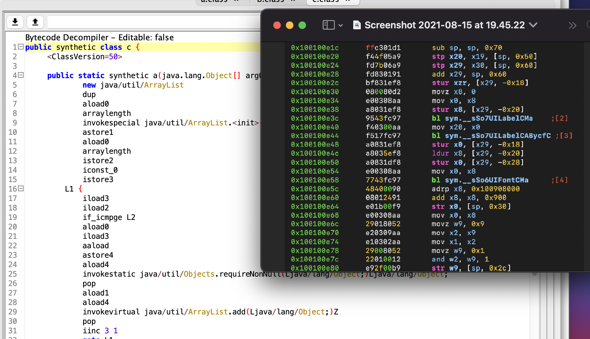
One major difference between them however (if no obfuscation was applied to Java code prior to compilation), is that Java bytecode can be decompiled to something very close to the original source code (the one produced by all-the-mighty-ones programmers, possibly during one of those sleepless 😴 nights). However assemly (either ARM or x86 is not decompiled that easily). Here is another comparison just FYI.
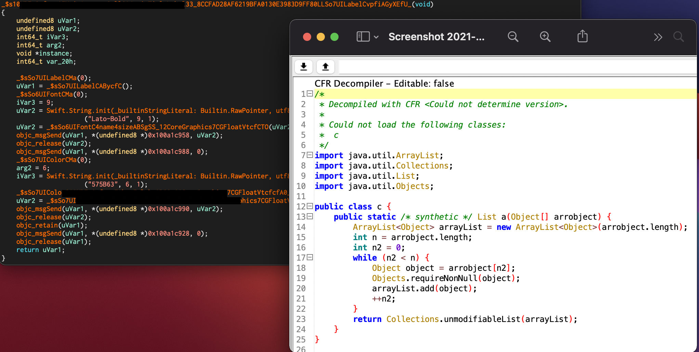
To the left we have a piece of ARM assembly from some Swift application (ARM code was shown above) decompiled with Ghidra (residing in Cutter) and to the left we can observe what does the decompiled Java bytecode looks like (the same function we saw in the screenshot above).
So, as you can see reversing ARM is no piece of cake 🍰, but reversing of Java bytecode is 😋. However, there is one thing to note… 📝. I’ve already mentioned that Android applications, thought they mostly use human-readable-when-decompiled Java bytecode, sometimes use C/C++ code as well and those buddies are tough 💪. These parts of application are called native code, since they are native to Linux kernel which Android OS is based on, while Java code is like a wolf 🐺 in a sheep’s 🐏 clothing, lurking all that understandable in the dungeons of JM.
Since there are two types of code base that an Android app might use, there are two types of debugging, depending on what exactly we want to debug. If we are after the Java code - we use jdb, if we are after native code - we use gdb. The same same division applies to tracing (see below if you are not familiar with this notion).
Since applications are usually debugged from the PC while being run on a mobile device, there must be two parts for the debugger. Some client-server architecture might be in place. That’s true. Some part is running on the mobile device 📱 while the controller is on the PC. When we talk about jdb, JDWP (Java Debug Wire Protocol) is used to standardise the communication between the two parts: the one the controls the flow from the PC and another one that is actually doing the dirty work on the mobile device.
But how does it really work under the hood? We have a Dalvik VM car or ART 🚘. That’s not actually a VM (though it was called that way). When we talk about a VM, we almost always think of Vbox, VMWare or Parallels or whatever other tool you prefer or know. This piece of software emulates a machine with a whole OS running on its top. However, sometimes a VM is something way less complex. I am planning on writing a blog post about VMs in crackmes and malware, but for you to get a notion I’ll leave a couple of words here. May skip it if not interested, it’s not that crucuial to this narrative.
Machine code is ugly (some might argue with that) and … well machinery. Meaning, it’s takes quite a time to read it and understand. One simple program that prints “Hello world!” might take dozens of assembly instructions. For PC however there is really no assembly. For me it looks like (and may be it is so) was the first attempt to humanise the machine code which consists of 1s and 0s only. For example, it would certainly take ages clock 🕰 for a human being to be fluent with something like this: 11000111010010. It’s definetely easier to read 0x31d2 (which is nothing more than a hex equivalent of 11000111010010), but still not very readable 😓. That’s why humans decided that 11000111010010 can be interpreted like xor edx, edx, which means apply xor operation to edx, zeroing it out. Of course, it’s much easier to read it now.
You might be thinking “Where is this all going?” Well, imagine there is a piece of code inside a highly obfuscated program that has some peculiar code that translate some garbage-looking binary (hex) digits into real assembly instructions (machine code). For example, this opcode (0x31d2).
array = [0x12, 0x13, 0x14, 0x15]
current_instruction = 0x0
switch current_instruction {
case 0x12:
hex = 0x5b
assembly = "pop ebx"
case 0x13:
hex = 0x83c201
assembly = "add edx, 0x1"
case 0x14:
hex = 0x31d2
assembly = "xor edx, edx"
case 0x15:
hex = 0x84c9
assembly = "test cl, cl"
}
This is an example of a very simple VM. It has only 4 instructions which it translates to real assembly. 0x12 means 0x5b which in human-readable assebly means pop ebx, telling the CPU to put the last value from the stack into ebx and move the stack pointer to the next value. 0x13 means 0x83c201 in real machine code, which can be interpreted as add edx, 0x1, which tells the CPU to add 1 to the value stored in edx registy. And so on. So, basically, a VM in this case is just a switch statement that translated its own bytecode into the one that the CPU understands. I presume, Dalvik VM, Java VM and ART are based on the same principle.
So, there is this Dalvik VM (ART for the later versions) which is like a one-way interpreter: listening to one party and delivering the information to another party in the form that it understands. However, as I’ve already mentioned, there is this native code part. This one is called by the Dalvik VM (which reads this plea from the Java bytecode), but it’s run natively, i.e. directly by Linux kernel. Here is a little sketch of how this whole thing works:
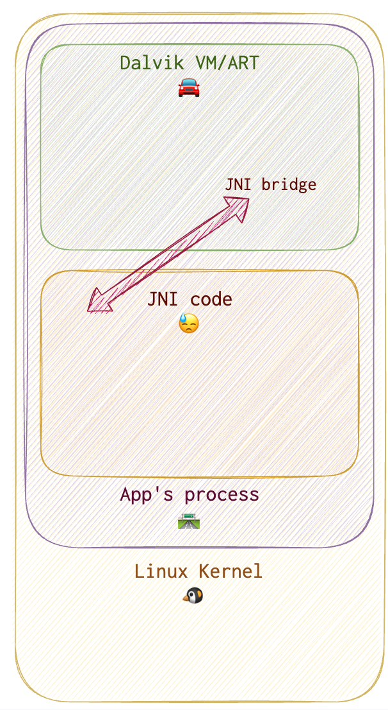
🗒
Java and native code talk via a JNI bridge (an arrow on the diagram above). Now, in order to debug both parts we need to understand, how this communication really works.
Native code is invoked via System.load() method (something similar to LoadLibrary for WinAPI, I guess). Android uses bionic instead of glibc, since it has some code specific to a mobile platform. JNI means Java Native Interface. JNIEnv is a pointer to a table. This table contains a list of functions’ offsets. This offsets point to their interfaces, that can be used to run a function. This is how Java code can talk to the native code.
Debugging Java
# get the PID of the application to be debugged
# option 1. List all debuggable apps
adb jdwp
# option 2
drozer console connect
run app.package.attacksurface <package_name>
# option 3. List all debuggable apps
drozer console connect
run app.package.debuggable
# option 4
frida-ps -U | grep <package_name_full_or_partial>
# forward
adb forward tcp:12345 jdwp:<PID_of_app>
# connect
jdb -connect com.sun.jdi.SocketAttach:port=12345 # windows
jdb -attach localhost:12345 # linux/mac
{ echo "suspend"; cat; } | jdb -attach localhost:12345 # suspend the process and attach
Debugging Native Code
I needed Adnroid NDK to be able to analyse native code. I tried using brew install --cask android-ndk, but this didn’t work for me. So, I followed instructions from here.
To explore the symbols:
rabin2 -s libnative-lib.so | grep -i Java
> 3 0x00000e78 0x00000e78 GLOBAL FUNC 16 Java_sg_vantagepoint_helloworldjni_MainActivity_stringFromJNI
Below are the commands to run gdb:
adb shell
su
# run gdb server and attach to the target process using its PID (process ID)
# to find the process PID use frida or jdwp or something else of your liking
/data/local/tmp/gdbserver --attach localhost:1234 [PID]
# in another tab on PC
adb forward tcp:1234 tcp:1234
# on the PC run this command from the apk directory containing the lib in question
$TOOLCHAIN/bin/gdb libnative-lib.so
# connect the client gdb on PC to the gdb server on the mobile device
> target remote :1234
In case some native function is called right upon the start, you might need to suspend the process first in Java code (since Java code is calling the native part).
Step 1. Wait for Debugger
Turn on the “Wait for Debugger” option. This will suspend the process from the very start.
Step 2. Run JDB client
Run jdb client, attach it to the process to be debugged.
# get the process PID to debug
adb jdwp
# forward the port to attach the jdb
adb forward tcp:7777 jdwp:[PID]
# suspend the process and attach
{ echo "suspend"; cat; } | jdb -attach localhost:7777
Now, the jdb is attached. Set the breakpoint at System.LoadLibrary() call (the one that loads native code into process memory) with stop in java.lang.System.loadLibrary command in jdb.
# get there
> resume
# stop right after System.LoadLibrary() returns
> step up
This is what success looks like:
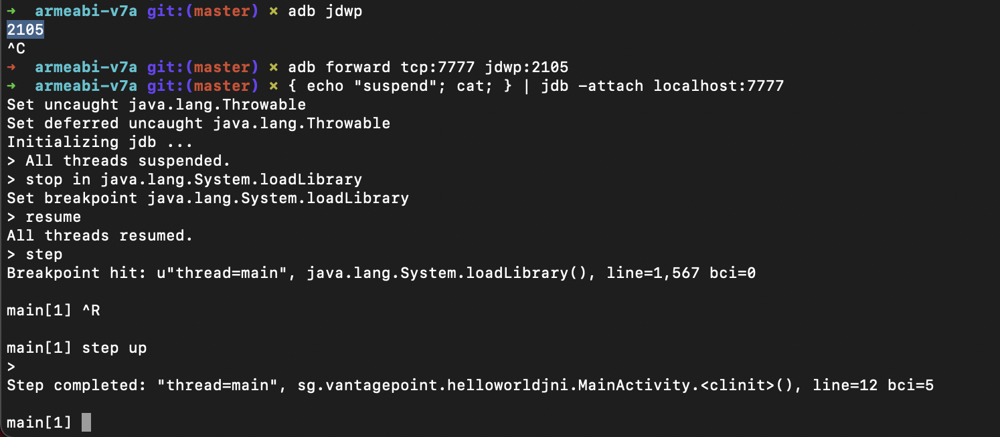
Step 3. Run the gdbserver
# forward the port to connect the gdb client to the gdb server
adb forward tcp:1234 tcp:1234
adb shell
su
# gdbserver should be installed on Android device
/data/local/tmp/gdbserver --attach localhost:1234 [PID]
🍀 This is what success looks like:
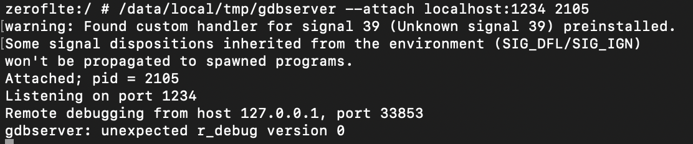
Now, it’s time to attach the gdb client (on PC 🖥️) to the running gdbserver (on mobile device📱).
# start the gdb client on your PC
$TOOLCHAIN/arm-linux-androideabi-gdb libnative-lib.so
# attach to the process
target remote :[PID]
🍀 This is what success looks like:
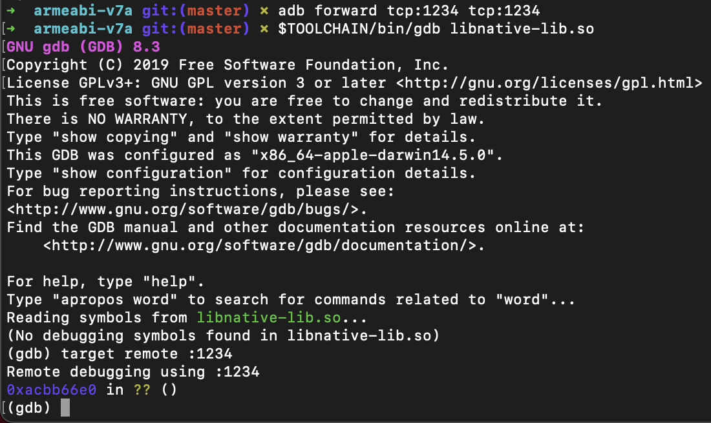
Problem 🛑 1. When running
gdbclient on PC at the very end, you might get a “Remote connection closed”. That means that for some reason it cannot connect to the targetgdbserveron the mobile device.Fix ⚒️. One of the most obvious and the easiest to fix reasons is that you have not run the
gdbserveron the mobile device. Remember, that there are two parts of this software. Start all over and follow the steps thoroughly. First, turn on the “Wait for debugger” option on mobile device (settings). Then start thejdb(if you need to suspend the process from the start), othervise, you may skip this step. Then forward the info stream viaadbto be able to connect. Start thegdbserveron mobile device and then (only then), try attaching thegdbclient.
This is not a success:
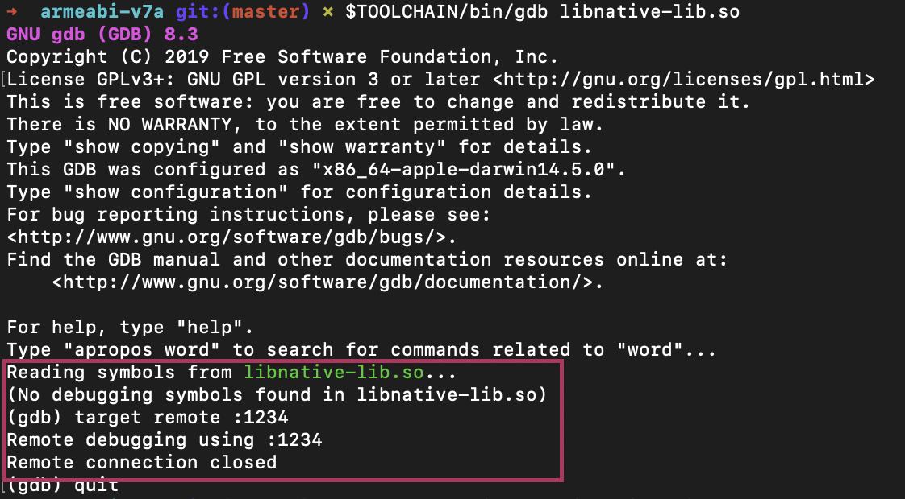
… and this is not either:
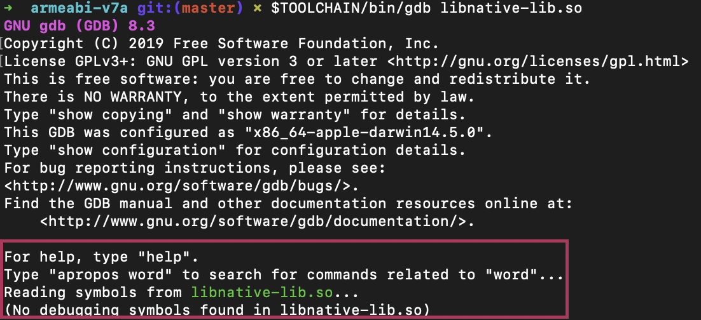
Tracing
Tracing Java
The easiest way I see it, is to use “Export classes” in ByteCode Viewer and load them into AnroidStudio. Fix all the possible errors (oh, there are going to be lots of them, if it’s not a lab application, believe me, I’ve been there 😓) and happy debugging and tracing with GUI.
Another option is to use jdb (patch and rebuild the application if android:debuggable="false" is set). After attaching jdb, use trace go methods to start tracing.
Both methods will deam all the information currently saved in /data/data for this specific application unusable. These methods are only to explore the application’s functionality.
Another way mentioned in OWASP is to use some Dalvik Debug Monitor Server (DDMS), which was included with Android Studio. But unfortunately doesn’t work anymore (deprecated). Official Android doc lists all the dprecated methods and their current alternatives. This is what is stated about tracing:
[Traceview] This tool is deprecated. To inspect
.tracefiles captured by instrumenting your app with theDebugclass, record new method traces, export.tracefiles, and inspect real-time CPU usage of your app’s processes, use the Android Studio CPU profiler.
To start instrumenting (tracing Java methods), the official documentation suggests using Debug.startMethodTracing("sample"). However, this is a good advice when you have source code. I’ve decided to get the bytecode for this line to be able to patch the bytecode.
Here are the first lines of onCreate() method of bytecode with tracing disabled:
.method protected onCreate(Landroid/os/Bundle;)V
.locals 2
.param p1, "savedInstanceState" # Landroid/os/Bundle;
.line 31
invoke-super {p0, p1}, Landroidx/appcompat/app/AppCompatActivity;->onCreate(Landroid/os/Bundle;)V
.line 32
const-string v0, "hello2"
iput-object v0, p0, Lcom/example/vulnerableapplication18/MainActivity;->hello:Ljava/lang/String
.line 33
new-instance v0, Ljava/lang/StringBuilder;
Here are the first lines of onCreate() method of bytecode with tracing enabled:
.method protected onCreate(Landroid/os/Bundle;)V
.locals 2
.param p1, "savedInstanceState" # Landroid/os/Bundle;
.line 31
const-string v0, "sample"
invoke-static {v0}, Landroid/os/Debug;->startMethodTracing(Ljava/lang/String;)V
.line 32
invoke-super {p0, p1}, Landroidx/appcompat/app/AppCompatActivity;->onCreate(Landroid/os/Bundle;)V
.line 33
const-string v0, "hello2"
Lines added are const-string v0, "sample" and invoke-static {v0}, Landroid/os/Debug;->startMethodTracing(Ljava/lang/String;)V. This resulted in shifting the line numbering. So, other than adding these lines to the smali file of the MainActivity (the first activity usually called), we need to fix the line numbering (if we do). When running the application with this line of code added, we are supposed to find a .trace file called sampel somewhere on /sdcard.
However, it looks like tracing is limited by the buffer size. So, it’s better to add this line to a onCreate method and adding stopMethodTracing to a onDestroy method of the same activity. Surprise… this is how the method looks in bytecode: invoke-static {}, Landroid/os/Debug;->stopMethodTracing()V.
Pull the logs 📄 on the PC: adb pull path-on-device/sample.trace ~/Documents/trace-logs/. These logs then can be imported and viewed like this in Android Studio:
Import your trace file by clicking Start new profiler session
in the profiler’s Sessions pane and then selecting Load from file.
Here is more information about using CPU profiler for .trace file inspecting.
New 🌟!
frida-trace -p [PID] -j '*!*certificate*/isu' - triggers a case-insensitive query (i), including method signatures (s) and excluding system classes (u). This is for Java tracing with frida-trace. The same can be accomplished with Java.enumerateMethods('*youtube*!on*') added to a frida scipt.
Tracing Native Functions
Though reversing native functions is a much tougher process, tracing is not. Quite the contrary: it’s way easier to trace native calls that Java ones. Tracing native calls can be performed in various of ways. On of my favourite is using frida-trace. Remember 📝 that Java code is compiled to machine code at some point (both in case of JIT or AOT), so when it’s already translated into 1s and 0s, the native calls might (and most likely will) be made. That’s where they can be seen even if the application doesn’t use JNI calls from the Java code (assumption). To test this assumption, I’ve hooked all functions, containing “write” in its name and ran the program from OWASP (HelloWorld_JNI.apk): frida-trace -H 192.168.1.X -p [PID] -i "*read*". It tookfrida-trace around a minute or two to instrument all the functions. Then it crashed. I’ve also tried frida-trace -H 192.168.1.X -p [PID] -i "*write*". Took very long as well, but didn’t crash. Resuming the process hooked with jdb resulted in lots of traced calls. And these are only those, containing "write":
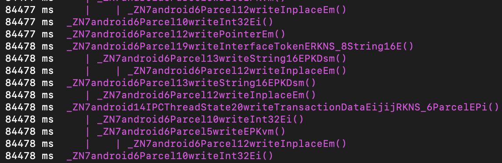
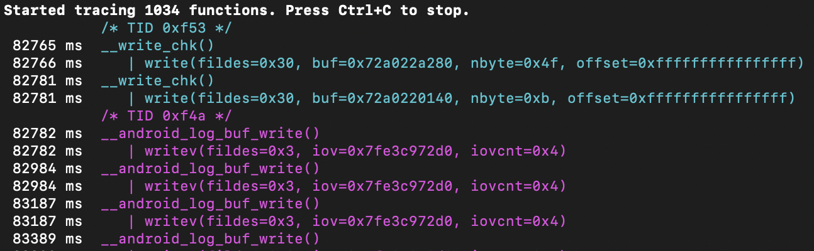
Started at 82765 ms and finished at 88812 ms. So, it took around 6047 ms ~ 6 sec in total. And this is a simple application that does nothing more than writing “HelloWorld!” using native code (C++), i.e. calling one custom C++ function. Obviously, this call could not generate so much stuff. Looks like my assumption was correct.
It’s also possible to trace native calls with ptrace system call with strace. strace can be build from source with NDK. However, if there are some anti-tampering techniques in place that detect ptrace - won’t work. Another option is to use ftrace. To enable: echo 1 > /proc/sys/kernel/ftrace_enabled. And view the result here: /sys/kernel/debug/tracing. KProbes allows to insert probes into arbitrary code addresses, but to use it, you need to compile your own kernel 😯.
Finding JNI calls with frida-trace: frida-trace -U -i "Java_*" [package.name]. If symbols are unavailable, trace by address: frida-trace -p [PID] -a "[libname.so]!0xXXXXX".
Another option is to use jnitrace: jnitrace -l [libname.so] [package.name]. Install with pip install jnitrace.
❓What’s the difference beyween
fridascript,frida-traceandjnitrace?
Symbolic Execution
Anti-reversing Techniques
AndroidManifest.xml
AndroidManifest.xml file contains different settings for the application within the <application> tag. One of such settings is android:debuggable being equal to true (by default, if there is no such settings in the file, the application cannot be debugged). This prevents the application from being debugged over JDWP (using jdb), but doesn’t prevent it from being debugged using gdb (from the Linux OS space).
⛏ How to circumvent android:debuggable=false?
Patch AndroidManifest.xml by setting android:debuggable to true. If there is no such setting there (by default it’s set to false unless there is a testCoverageEnabled true в файле build.gradle), add it to the application tag like this:
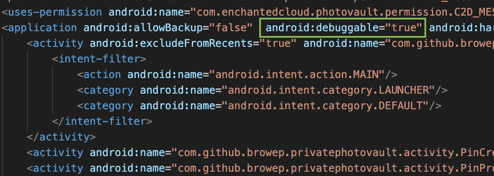
Rebuild the application and sign it with your certificate in order to get it installed properly on the device. To rebuild and sign the application follow these instructions (Android BTFTM and RTFM, bypasses section). The general idea is to follow these steps:
- Decompile the application to get to the bytecode or AndroidManifest.xml with
apktool d <package_name>.apk. We are afterAndroidManifest.xmlhere. - Patch the file
AndroidManifest.xmlby addingandroid:debuggable="true"within theapplication tag(see the picture above). - Rebuild the application back into an
apkwithapktool b <decompiled_folder_with_a_patch> -o <new_apk_name>.apk. - If you don’t have a keystore to use for signing, create the keystore first with
keytool -genkey -v -keystore <keystore_name> -alias <key_name> -keyalg RSA -keysize 2048 -validity 10000. - Sign the application with
<key_name>from<keystore_name>withjarsigner -verbose -sigalg SHA1withRSA -digestalg SHA1 -keystore <keystore_name> <new_apk_name>.apk <key_name>
⚠️ This technique will require reinstalling the application. All data that is deteled upon uninstalling, will be cleared and unavailable for analysis.
🩹 What is the corresponding anti-debugging technique?
An application can check ApplicationInfo.FLAG_DEBUGGABLE and compare it to the contents of AndroidManifest to know when it’s being debugged. If the application was tampered, these values will be different.
⛏ How to circumvent?
Use runtime analysis tools like frida to hook the methods and manipulate the return values.
Timing
Developers might check the timing. Debugging slows down the execution. An example of such code (taken from Mobile Gitbook) is shown below:
static boolean detect_threadCpuTimeNanos(){
long start = Debug.threadCpuTimeNanos();
for(int i=0; i<1000000; ++i)
continue;
long stop = Debug.threadCpuTimeNanos();
if(stop - start < 10000000) {
return false;
}
else {
return true;
}
}
⛏ How to circumvent?
Check for such code using ByteCode Viewer. If this is the technique used, hook the method with a runtime analysis tool like frida and make it always return false.
isDebuggerConnected
Using isDebuggerConnected or (gDvm.debuggerConnected || gDvm.debuggerActive) developers may detect whther the current process is being debugged.
Using JDWP Data Structures
The older versions of Android architecture included Dalvik machine. The global virtual machine state is stored in the DvmGlobals structure, which is pointed to by the global variable gDvm . This structure, among other things, determines whether the application can be debugged:
struct DvmGlobals {
/*
* Some options that could be worth tampering with :)
*/
bool jdwpAllowed; // debugging allowed for this process?
bool jdwpConfigured; // has debugging info been provided?
JdwpTransportType jdwpTransport;
bool jdwpServer;
char* jdwpHost;
int jdwpPort;
bool jdwpSuspend;
Thread* threadList;
bool nativeDebuggerActive;
bool debuggerConnected; /* debugger or DDMS is connected */
bool debuggerActive; /* debugger is making requests */
JdwpState* jdwpState;
};
Developers might use the following code to make use of the above structure and trigger a crash on any attempt to attach a debugger:
JNIEXPORT jboolean JNICALL Java_poc_c_crashOnInit ( JNIEnv* env , jobject ) {
gDvm.methDalvikDdmcServer_dispatch = NULL;
}
Since ART doesn’t have access to this structure, the above technique will be deemed useless. But there is something that can be done though using exported vtables for JdwpAdbState and JdwpSocketState. If the developer substitutes jdwpAdbState::ProcessIncoming with the address of JdwpAdbState::Shutdown and the same for JdwpAdbState as well, the any connected Java debugger is disconnected, further attempts will fail and without enything being written to log.
An example of such code, taken from here (Bernhard Mueller’s blog, now archived 😞):
#include <jni.h>
#include <string>
#include <android/log.h>
#include <dlfcn.h>
#include <sys/mman.h>
#include <jdwp/jdwp.h>
#define log(FMT, ...) __android_log_print(ANDROID_LOG_VERBOSE, "JDWPFun", FMT, ##__VA_ARGS__)
// Vtable structure. Just to make messing around with it more intuitive
struct VT_JdwpAdbState {
unsigned long x;
unsigned long y;
void * JdwpSocketState_destructor;
void * _JdwpSocketState_destructor;
void * Accept;
void * showmanyc;
void * ShutDown;
void * ProcessIncoming;
};
extern "C"
JNIEXPORT void JNICALL Java_sg_vantagepoint_jdwptest_MainActivity_JDWPfun(
JNIEnv *env,
jobject /* this */) {
void* lib = dlopen("libart.so", RTLD_NOW);
if (lib == NULL) {
log("Error loading libart.so");
dlerror();
}else{
struct VT_JdwpAdbState *vtable = ( struct VT_JdwpAdbState *)dlsym(lib, "_ZTVN3art4JDWP12JdwpAdbStateE");
if (vtable == 0) {
log("Couldn't resolve symbol '_ZTVN3art4JDWP12JdwpAdbStateE'.\n");
}else {
log("Vtable for JdwpAdbState at: %08x\n", vtable);
// Let the fun begin!
unsigned long pagesize = sysconf(_SC_PAGE_SIZE);
unsigned long page = (unsigned long)vtable & ~(pagesize-1);
mprotect((void *)page, pagesize, PROT_READ | PROT_WRITE);
vtable->ProcessIncoming = vtable->ShutDown;
// Reset permissions & flush cache
mprotect((void *)page, pagesize, PROT_READ);
}
}
}
⛏ How to circumvent?
Well, fix the vtable that was broken with this function after it was run.
References
[1] Mobile SecGuide.
[2] Bernhard Mueller archived blog
[3] Advanced Android Reverse Engineering by Bernhard Mueller
[4] CrackMes by Bernhard Mueller
[5] Does the JNI code run within Dalvik VM? StackOverflow